Across Shikoku: six rides, two trains and three minivans
Twelve days from Onomichi to Kochi — the rides, the rest days, the restaurants, and the things worth knowing before you go.
Contents
- Before you ride
- Ride 1 · Sat 31 Oct — Onomichi to Setoda · 39.1 km · +341 m · 6–7 hours
- Ride 2 · Sun 1 Nov — Setoda to Imabari · 49.5 km · +409 m · 7–8 hours
- Rest day · Mon 2 Nov — Imabari to Matsuyama (train)
- Rest day · Tue 3 Nov — Matsuyama to Takamatsu (train)
- Ride 3 · Wed 4 Nov — Takamatsu to Tokushima · 82.5 km · +354 m · 8–9 hours
- Ride 4 · Thu 5 Nov — Tokushima to Minami · 70.0 km · +504 m · 7–8 hours
- Ride 5 · Fri 6 Nov — Minami to Muroto · 61.8 km · +409 m · 6–7 hours
- Ride 6 · Sat 7 Nov — Muroto to Kochi · 86.3 km · +329 m · 8–9 hours
- Minivan days · Sun 8 – Tue 10 Nov — Kochi, Shimanto and Cape Ashizuri
- Wed 11 Nov — the flight home
- The route in numbers
- Climbing, day by day
- Resupply at a glance
- Quick reference: every place on the map
- What we ate, town by town
- Photos from the route
- Bailouts
- What worked
- What I'd change
This is the working guide to twelve days across Shikoku — six rides, two train days and three minivans — from Onomichi to Kochi via the Shimanami Kaido and the Pacific coast. It's written for anyone thinking of following the same line — the road numbers, the stops worth making, the climbs that actually matter, and the escape routes if a day goes wrong.
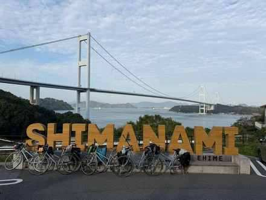
The Shimanami Photo Spot, Imabari — the view the whole route is built around.Everything below comes from the six GPX tracks we rode, then checked against the road. Where a number disagrees with a tourist brochure, trust the track.
Before you ride
Bikes. We took the Mamacari, the rental fleet's flat-bar city bike, with a pannier holder on the front — enough for a day bag and a camera, not for a loaded tour. Check the mount takes your bag before you leave the counter, because the alternative is riding with it on your back for six days.
The group ran two bags: a budget pannier from AliExpress and the Ortlieb Vario Lite. Both are 2-in-1 — a pannier on the bike, a backpack off it — and that is the feature worth buying for: an ordinary pannier is a bucket you unclip and carry by the handle, which is fine for a bag drop and useless for a walk into town or a flight of stairs.
Both were as good as each other, rain included. The cheap one kept its contents dry and never gave trouble, so the extra money buys the name, the fittings and the finish, not the function. If you want the convertible trick for the least money, the budget one is the sensible buy. One bag each is right — a second one is weight you will feel on Ride 4, and a backpack on the bike is a sweaty mistake.
We used two separate rentals. The Shimanami rental network covers the islands only, so the first bike is collected at Onomichi and dropped at Imabari at the end of Ride 2. A second rental starts in Takamatsu and finishes in Kochi. Book both well ahead — six cross bikes in one size run is not something you arrange the week before, and the Takamatsu–Kochi leg has fewer shops than the islands do. If you bring your own bike, this is one of the easiest places in Japan to ride it: the Shimanami is fully signposted, and the ferries take bikes without fuss.
Luggage. No forwarding on this trip — everything is carried on the bike for six riding days. That's the single biggest change to how you pack, and it's worth a loaded test ride before you commit. If you'd rather not carry it, Yamato's Ta-Q-Bin will move a bag between hotels for roughly the price of a good dinner.
Bags that aren't panniers. A dry bag or daypack needs tying down, and the rental counter sells elastic loops for ¥500 each. Buy one per bag: they hold a load against the rack over bridge ramps and bad surfaces, and without one you are re-securing the same bag every ten kilometres. Cheapest useful thing in the shop.
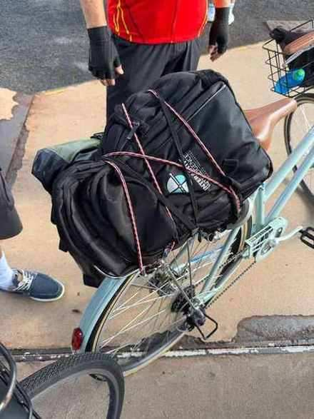
Tying a bag down with an elastic loop, Onomichi.Ferry fares. Coins ready before you reach the ramp — ¥100 for a passenger and ¥10 for the bike. You pay on board after you have boarded, not at a ticket window, so there is nothing to queue for and no reason to arrive early with a wallet in your hand. Services run from 06:00 to 22:00, which is wide enough that the timetable rarely decides your day.
Trains and bikes. JR services here don't take assembled bikes. Plan the two middle days as genuine rest days: bikes returned, bags in a hotel, limited express between cities. Imabari to Matsuyama is under an hour; Matsuyama to Takamatsu is around two and a half hours. Locals take twice as long and aren't worth it with luggage.
Lights and tunnels. Rides 4, 5 and 6 are all Route 55, and Route 55 goes through tunnels. Lights on, every time, single file. Not a suggestion.
Water and food. Two bottles minimum, refilled at every convenience store. Rides 1–2 have shops every few kilometres. Rides 4–6 do not — carry food from town, and treat the last konbini as the last konbini.
Timing. Late October into November: sunset around 17:10 and a Pacific headwind that builds after lunch. Every long day starts at 07:00–07:30 for that reason, not for discipline.
Fix the bike on Ride 1. Saddle height, cleats, rubbing, sore knees — sort it at the rental station and again that evening. Whatever you leave until Ride 4 will still be there on Ride 4, and Ride 4 is not the day you want it.
Ride 1 · Sat 31 Oct — Onomichi to Setoda · 39.1 km · +341 m · 6–7 hours
The easy one, deliberately: it's also the day you meet the bikes.
The profile. Three gentle rises — km 1.2–9.6 (+34 m), km 18.1–20.9 (+23 m), km 29.9–34.8 (+41 m). High point 42 m. Nothing here needs a small ring.
- 08:00, km 0 — Collect bikes at Bicycle Rental Onomichi Station, 1-10 Higashigoshocho. Saddle height, brakes, lights, tyres, group photo. Allow 45 minutes.
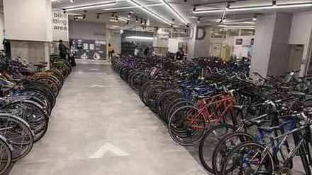
Bikes collected at Onomichi Station, 08:00.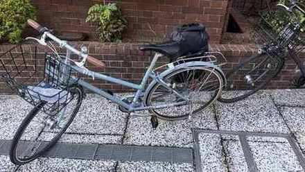
The Mamacari, with pannier holder — the bike for the next six days.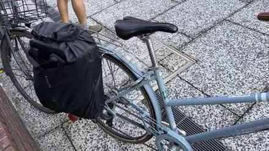
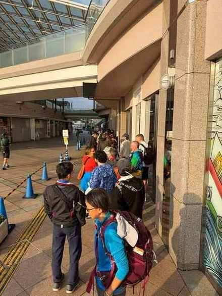
The queue at the Onomichi bike collection point, 07:45.- 08:45, km 0 — Coffee and breakfast in town before the ferry. The bikes are sorted, so this is the last sit-down until Setoda: nothing else opens before the islands.
- 09:50, km 2 — Ferry to Mukaishima. The Shimanami proper starts on the far side; ferries run often and take cash.
- 10:15, km 10.5 — Shimanami Beach: first view of the island chain, plus toilets and vending.
- 11:15, km 14.1 — The scenic village path: narrow lanes between houses, the old Shimanami.
- 11:50, km 19.2 — A citrus farm shop on Innoshima. Hassaku juice, cakes, bottle refills.
- 12:40, km 31 — Lunch in Setoda: lemon ramen or lemon curry. The island grows most of Japan's lemons.
- 13:50, km 34 — Kosan-ji and the Hill of Hope: an underground marble cave and a scaled-down Parthenon built by one man's obsession. Closes around 17:00.
- 15:20, km 39.1 — Setoda, done for the day.
See: Kosan-ji is the day's centrepiece and deserves real time — it is strange and wonderful. Sunset Beach is a ten-minute walk from anywhere in town.
Eat: lunch in Setoda. Dinner options are limited and close early — look at them and book at check-in, not at 19:00.
Ride 2 · Sun 1 Nov — Setoda to Imabari · 49.5 km · +409 m · 7–8 hours
Four bridges, lemon groves, and a shrine with a national-treasure armoury. If you ride only one day of this route, ride this one: it is the scenic day, bridge after bridge over water, where Day 1 runs through villages and factory edges on its way out of Onomichi.
The profile. Short rises at km 11.3–15.9 (+40 m), km 18.3–21.4 (+21 m), km 23.0–27.6 (+43 m), then a long gentle drag from km 31.9 to 42.6 (+41 m over nearly 11 km). High point 53 m. All bridge approaches: short, sharp, over quickly.
- 08:30, km 0 — Away from Setoda.
- 08:55, km 5.3 — Rest area, toilets and vending. First regroup.
- 09:15, km 5.7–8.5 — Do the whole cluster as one 40-minute stop: Lemon Bench, Dinosaur Skeleton, Lemon Valley, Lake Shikoku viewpoint.
- 10:15, km 14 — Tatara Bridge. Photo stop; the prettiest of the four.
- 10:45, km 18–22 — Oyamazumi Shrine. One of Japan's oldest, and the treasury holds national-treasure armour and swords. An hour, minimum.
- 12:15, km 23 — Lunch at Roadside Station Yoshiumi Iki-iki-kan: seafood grilled over charcoal, and the best lunch on the Shimanami. There is a bike rental station on site too, which makes this a place you could start or finish a ride from rather than only pass through.
- 13:30–15:00, km 26–37.6 — Bay View regroup, murals on the breakwater, the shipyard viewpoint, the Jizō statue. Each is ten minutes and together they make the afternoon.
-
Before Imabari — Shimanami Photo Spot, Sunabacho. The classic Shimanami frame, and the one stop on this route worth making purely for a photograph — sea, islands and bridge lined up. Stop, take it, then ride the last few kilometres into town.
-
15:45, km 45 — Kurushima Kaikyo Bridge. Four kilometres over the whirlpool strait, with an observation point at the end. The ramp onto it is the steepest thing on the Shimanami at around 6% — short, but it will find your easiest gear.
- 16:30, km 49.2 — Bikes returned, 300 m before the hotel. That closes the first rental: the Shimanami bikes go back at Imabari, the next set is collected in Takamatsu, and everything until then is on foot — starting with the onsen.
After the ride: Shimanami Hot Spring Kisuke no Yu, 1-2-30 Nakahiyoshicho, Imabari — the onsen we walked to after handing the bikes back, and it serves dinner too, which removes the evening's logistics in one stop: eat, soak, walk back. Book the meal when you arrive rather than hoping for a table at 19:00.
See: Oyamazumi is the one unmissable stop; the Kurushima crossing is the spectacle. If you're running late, cut the murals and the shipyard, never the shrine.
Eat: Imabari is a yakitori town. Walk the castle first — seawater moat, original stone walls.
Rest day · Mon 2 Nov — Imabari to Matsuyama (train)
No riding. The bikes went back the night before, so this is luggage in hand and the LEX south.
Breakfast was the station itself: a Lawson and a 7-Eleven, both at Imabari Station — the honest answer to a wet morning with a train to catch. Tickets from the machine, no booking needed; the service runs roughly hourly and unreserved is the cheap option.
The day, as it went. Luggage dropped at the hotel first, then straight up to Matsuyama Castle — the keep, the original stone walls, and the Seto laid out below. Down by chairlift, then a few minutes' walk to lunch: tai meshi at Tai Meshi Motoyama, Okaido — sea bream and rice with a raw egg cracked over the top and mixed through at the table. That egg is the local way to eat it, and the reason to order the dish here rather than anywhere else on the route.
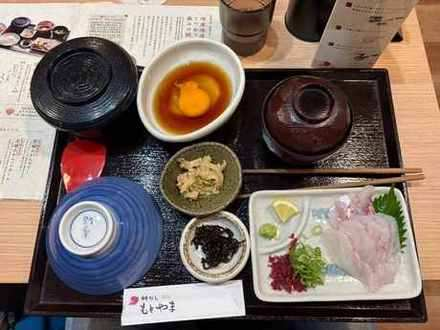
Tai meshi with a raw egg, Tai Meshi Motoyama — lunch, Mon 2 Nov.Matsuyama is worth the stop for Dogo Onsen alone — the oldest hot spring in Japan by most accounts, and the bathhouse that supposedly inspired Spirited Away. The main building reopened in 2024 after a long restoration. It is also the right answer to a wet afternoon: the arcade is covered and the baths are indoors.
Rest day · Tue 3 Nov — Matsuyama to Takamatsu (train)
The second train day, and the one to stay loose about. We were booked on the 09:15 and took the 07:20 instead — the tickets are non-reserved, so an earlier train costs nothing and arriving at 09:47 buys half a day in Takamatsu.
Bags to the accommodation first, because check-in is 15:00 and a key-code apartment has no front desk to leave them with. Then the Kotoden from Takamatsu-Chikko, two stops to Ritsurin-koen, for Ritsurin Garden — the finest landscape garden in the country, and the reason to arrive early. Allow two hours; the circuit past the bridges and the pine islands is the point.
What you are looking at. The sign at the gate gives the numbers: a strolling daimyo garden from the Edo period, laid out with six ponds and thirteen landscaped hills in front of the green slope of Mt Shiun-zan, planted with about a thousand pines. It is described as Japan's largest cultural-property garden, and the landscape has been handed down for roughly four hundred years. Walk it as a circuit rather than cutting across — the design only reads in the order it was meant to be seen.
We stopped for tea partway round — matcha and a sweet, sitting over the water — and that is what turned a walk into an afternoon. You sit on tatami, at a low table, with the pond in front of you.
How to drink it. The order is not decoration:
- Eat the wagashi first — it sweetens the mouth so the matcha reads balanced rather than bitter.
- Lift the bowl with both hands, left palm underneath, right hand steadying the side.
- Turn it a quarter turn clockwise, so the decorated front faces away from you.
- Drink in two or three sips and finish it — leaving tea in the bowl is the one real faux pas.
- Wipe the rim with your thumb and forefinger, then wipe your fingers on the kaishi paper.
- Turn the bowl back the way it was before you set it down.
No clinking, and don't stir it: matcha is drunk as poured. On tatami, kneeling is correct; cross-legged is fine in a casual garden tea house. Budget for it: the garden rewards the person who sits down in the middle of it rather than walking the loop and leaving.
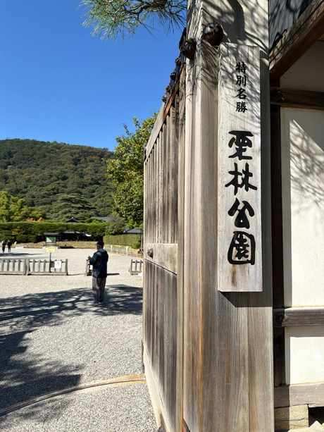
Ritsurin Garden, Takamatsu — 3 November.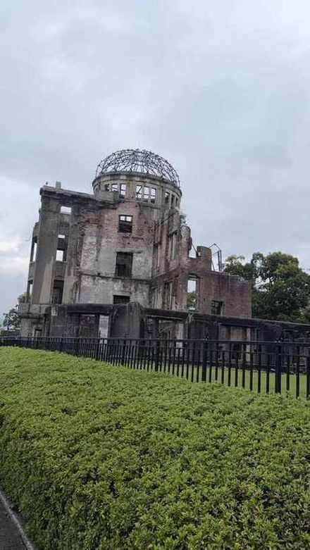
Tea in Ritsurin Garden, Takamatsu — 3 November.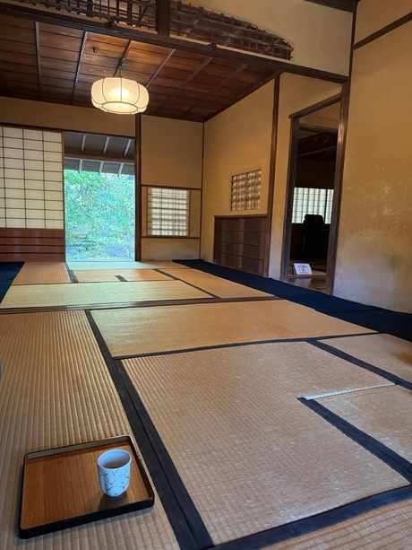
Matcha on the tatami, Ritsurin Garden.Lunch was Sanuki udon, which is the local religion rather than a dish: kamatama butter at Baka Ichidai if you want the famous bowl, or Yamada-ya out near Yakuri, 8 km east, if you want to sit down in a 200-year-old house. Either way, eat before 13:00 — they close when the noodles run out.
Takamatsu is the last stop before the second half of the riding.
Ride 3 · Wed 4 Nov — Takamatsu to Tokushima · 82.5 km · +354 m · 8–9 hours
The route was re-drawn late in planning and it's much the better for it. The old line went inland over a +186 m climb at km 36–42; this one runs the coast east through Kitanada, then turns inland to the Yoshino plain. Ten kilometres longer, no climb, and a far better lunch.
The profile. Almost entirely flat. Highest point just 68 m at km 26.8. It is now the second-longest day, on open road rather than a cycleway — which is why it takes eight hours despite the profile.
- 07:30, km 0 — Depart. A longer day than the distance suggests.
- 09:00, km 12.3–12.6 — Early stop, then the convenience store for water and snacks.
- 10:45, km 26.8 — Top of the day at 68 m. After this it stays gentle.
- 12:15, km 53.9 — Kitanada Fish Market. This is the reason the route exists: fresh seafood on the coast, and the best lunch of the first half.
- 14:15, km 62.2 — Last resupply.
- 16:30, km 82.5 — Tokushima.
See: the Awa Odori Kaikan runs year-round performances of Japan's biggest dance festival, and you can join in. Do it that night — tomorrow starts early. The new line runs the Naruto coast, so the whirlpool observatory is a shorter detour than it used to be — decide on the day rather than committing in advance.
Eat: Tokushima ramen, or an izakaya — and book for six.
Ride 4 · Thu 5 Nov — Tokushima to Minami · 70.0 km · +504 m · 7–8 hours
The hardest day, and not because of the total. High point 120 m at km 42.5, with two late climbs and constant rolling road.
The profile. A long false flat from km 1.7 to 43.0 — +117 m at 0.3%, which never feels like a climb but costs you anyway. Then the two that do: km 53.6–58.5, +76 m at 1.6%, and km 58.9–61.5, +33 m at 1.3%.
- 07:30, km 0 — Depart.
- 08:45, km 12.4 — Convenience store. Water, snacks.
- 09:45, km 21.3 — Regroup.
- 10:45, km 27.9 — Viewpoint and photo stop.
- 11:15, km 31.2 — Café. The last sit-down until late; take it.
- 11:50, km 31.3 — A small pass, and a regroup at the top.
- 13:45, km 58.4 — Late lunch. This is your marker: 83% of the way, so eat a snack before you get here.
- 15:15, km 70.0 — Minami.
See: Byodo-ji, just past Minami — a small seaside temple with a floating Jizō, twenty minutes, very atmospheric. The northern edge of the Muroto Geopark starts here.
Eat: the real meal of the day is the late lunch at km 58.4. Carry snacks for the gap from km 31 to 58, where services are thin.
Ride 5 · Fri 6 Nov — Minami to Muroto · 61.8 km · +409 m · 6–7 hours
The wildest scenery of the ride — and the day that lies to you on paper.
The profile. High point just 18 m at km 35.5. No climb worth naming. What the track shows instead is dozens of small rises: the classic Japanese coastal road. Ride it compact and it flows; ride it hard and it drains you.
- 08:00, km 0 — Depart.
- 09:00, km 11.7 — Oshiro-Matsubara beach: long sand, black pines, almost nobody. Best photo stop of the morning.
- 09:35, km 14.1 — Coffee.
- 11:15, km 41.3 — Regroup at the public toilet.
- 12:00, km 45.3 — Small shop: water and snacks.
- 12:30, km 48 — Lunch in Muroto. Katsuo no tataki, seared over straw. This is the town for it; don't order anything else.
- 14:00, km 52 — Hotsumisaki-ji, Temple 24 of the eighty-eight. Kukai trained here; the main hall faces open ocean. Allow an hour.
- 15:15, km 56 — Muroto Cape and Shiofuki Iwa: lighthouse, cliffs, a blowhole that performs when the swell is up.
- 16:15, km 61.8 — Muroto.
See: Hotsumisaki-ji and the cape are the reasons to come to this peninsula. If the weather turns, the Muroto Geopark Museum is a genuinely good substitute — plate tectonics and whaling history.
Eat: katsuo no tataki at lunch. Dinner is not available where you're sleeping, so eat in town or buy at a konbini before you arrive.
Ride 6 · Sat 7 Nov — Muroto to Kochi · 86.3 km · +329 m · 8–9 hours
Longest day, flattest gradient, and the one where the weather decides everything.
The profile. Essentially level for 86 km. High point 21 m at km 26.4. But a 25–30 km/h headwind on an exposed coast is the equivalent of a long steady climb, and it usually arrives after lunch.
- 07:00, km 0 — Depart. The early start is the whole plan.
- 07:20, km 1.5 — The bench: morning view back over the cape.
- 08:45, km 12.8 — Regroup.
- 10:00, km 25.2 — Early lunch at the port canteen. Eat now; the afternoon is the hard half.
- 11:15, km 31.4 — Convenience store: water and snacks for the exposed stretch.
- 13:30, km 55 — No marker here. Carry water and pick a shop when you see one.
- 14:45, km 62.8 — Regroup.
- 15:00, km 62.9 — Tei Port's movable bridge, one of the few still working in Japan. Fifteen minutes, and you either sail through or wait for it.
- 16:30, km 86.3 — Kochi.
Eat: Kochi finishes well — a castle with its original keep rather than a reconstruction, and Hirome Ichiba: 65 food stalls under one roof, communal tables, beer from the convenience store next door. It's the right way to end six days on a bike.
Minivan days · Sun 8 – Tue 10 Nov — Kochi, Shimanto and Cape Ashizuri
Three days in a minivan, and worth the detour: roughly 106 km west to the Shimanto River, 50 km on to Cape Ashizuri, then 156 km back to Kochi.
West of Kochi, the Shimanto River is Japan's last free-flowing clear stream — no dams along its length — crossed by chinkabashi, the low-water bridges that disappear under the river when it floods. Further south, Cape Ashizuri is the southernmost point of Shikoku: white lighthouse, dramatic cliffs, and Kongo-fukuji, Temple 38, whose main hall faces open ocean and has stood there for twelve centuries.
Wed 11 Nov — the flight home
Kochi to Haneda, then Haneda to Sydney: two flights, no riding, and a long day rather than a hard one. Kochi Airport is small and quick, so the check-in is not the risk — the Haneda connection is. Leave the margin you would leave for a domestic transfer in Sydney, and keep the bike bags where you can reach them.
The route in numbers
| Day | Route | Distance | Climb | Moving | Allow | Character |
|---|---|---|---|---|---|---|
| 1 | Onomichi → Setoda | 39.1 km | +341 m | 2:37 | 6–7 h | Easy — island warm-up |
| 2 | Setoda → Imabari | 49.5 km | +409 m | 3:21 | 7–8 h | Moderate — the postcard day |
| — | Imabari → Matsuyama (train) | — | — | — | — | Rest day |
| — | Matsuyama → Takamatsu (train) | — | — | — | — | Rest day |
| 5 | Takamatsu → Tokushima | 82.5 km | +354 m | 4:57 | 8–9 h | Long, almost flat |
| 6 | Tokushima → Minami | 70.0 km | +504 m | 5:17 | 7–8 h | Hardest |
| 7 | Minami → Muroto | 61.8 km | +409 m | 3:50 | 6–7 h | Moderate, wild coast |
| 8 | Muroto → Kochi | 86.3 km | +329 m | 5:12 | 8–9 h | Longest, flattest, wind |
Totals: 389.2 km, +2,346 m over six riding days. Moving time is about 25 hours; door-to-door it's closer to 45, which is the number that decides your evening.
A note on the numbers, because you will compare them with a route planner: komoot's own cards report higher ascent for the same tracks — 510 m for Day 1 against our 341 m. That is smoothing, not a different road. Plan with the higher figure if you want to be conservative; the shape of each day does not change.
Climbing, day by day
Cumulative ascent flatters a coastal route. What matters on the day is the one climb you actually notice:
| Day | The climb that matters | High point | What it feels like |
|---|---|---|---|
| 1 | Three gentle rises: +34 m, +23 m, +41 m | 42 m at km 34.8 | Rollers. Nothing needs the small ring |
| 2 | Bridge approaches only; the Kurushima ramp is the steepest of the trip at about 6% | 53 m | Short and sharp, over quickly |
| 5 | None — re-routed coastal | 68 m at km 26.8 | Flat all day, and it still takes 8 hours |
| 6 | A false flat from km 1.7 to 43 (+117 m at 0.3%), then +76 m at 1.6% and +33 m at 1.3% | 120 m at km 42.5 | The drag that never feels like a climb, and still costs you |
| 7 | Dozens of small rises, no single climb | 18 m at km 35.5 | Undulates constantly — tiring in a way the profile hides |
| 8 | None | 21 m at km 26.4 | The headwind is the climb |
The lesson from that table: this route has one genuinely steep ramp, on the approach to the Kurushima bridge, and everything else is either a long grind or a coastal roll. Day 6 is hard because of the shape of it — a three-hour false flat at the start, when your legs are cold — not because of any wall.
Resupply at a glance
| Day | Water and food |
|---|---|
| 1 | Vending at km 10.5, farm shop km 19.2, full town at km 31 |
| 2 | Rest area km 5.3, michi-no-eki km 23, bay viewpoint km 25.8 |
| 5 | Convenience store km 12.6, fish market km 53.9, last shop km 62.2 |
| 6 | Convenience stores km 12.4 and 21.3, café km 31.2 — then nothing until km 58.4 |
| 7 | Café km 14.1, shop km 45.3, town at km 48 |
| 8 | Port canteen km 25.2, convenience store km 31.4 |
Ride 4 is the one to plan around. After the café at km 31 the services disappear, so the lunch you eat at km 58 is the lunch you carried out of Tokushima.
Quick reference: every place on the map
Everything named in this guide, in one table — the logistics first, then the food. Tap the map link and it opens where you need to be.
| Place | Where | Why it is here | Map |
|---|---|---|---|
| A-Bomb Dome | Hiroshima, Peace Memorial Park | The reason for the detour into the city | Map |
| Peace Memorial Museum | Hiroshima, Peace Memorial Park | Allow a morning, not an hour | Map |
| Okonomimura | Hiroshima, Shintenchi | Hiroshima-style okonomiyaki, first lunch | Map |
| Toyota Rent a Car | Hiroshima Airport | One-way pickup, car collected on landing | Map |
| Apollo Station Shin-Onomichi | 5900-1 Kuriharacho, Onomichi | Refuel before handing the car back | Map |
| Toyota Rent a Car Shin-Onomichi Ekimae | 1-6 Kuriharacho, Onomichi | One-way drop-off, near the start line | Map |
| Bicycle Rental Onomichi Station | 1-10 Higashigoshocho, Onomichi | Collect the bikes — opens 08:00, queue from 07:30 | Map |
| Onomichi Ramen Betcha | 4-11 Higashigoshocho, Onomichi | Pork and oyster ramen, first dinner | Map |
| Keima | Setoda | Restaurant | Sashimi set |
| Roadside Station Yoshiumi Iki-iki-kan | 4520-2 Yoshiumichomyo, Imabari | Charcoal-grilled seafood, Day 2 lunch — bike rental on site | Map |
| Shimanami Photo Spot | 2-8-8 Sunabacho, Imabari | The must-stop frame, Day 2 | Map |
| Shimanami Hot Spring Kisuke no Yu | 1-2-30 Nakahiyoshicho, Imabari | Onsen with dinner, after Day 2 | Map |
| Tai Meshi Motoyama | Okaido 3-8-2, Matsuyama | Tai meshi with raw egg, Day 3 lunch | Map |
| Yubune Sento | 269 Setodacho Setoda | Public bath, two doors from dinner | Map |
| Ritsurin Garden | 1-20-16 Ritsurincho, Takamatsu | The garden, morning of 3 Nov | Map |
What we ate, town by town
The route tells you where to ride. This is the other half of the trip: the food, in the order we reached each town. Everything under Hiroshima is what we actually ate; the rest is the list we carried into each town, and it stays here until we get there or cross it off. Every place name links to Google Maps, so you can pull it up at the table rather than searching for it.
| Place | Town | What it is | What to order | Verdict | Map |
|---|---|---|---|---|---|
| Okonomimura | Hiroshima | A building of okonomiyaki counters | Hiroshima-style okonomiyaki with noodles | First meal of the trip, and a good omen Map | |
| Onomichi Ramen Betcha | Onomichi | Ramen counter | Pork and oyster ramen | The recommendation of the trip so far Map |
Hiroshima — first lunch
We came into Hiroshima by car before the ride, for the Peace Memorial Park: the A-Bomb Dome and the Peace Memorial Museum. That is the reason lunch was in the city rather than on the road — the museum takes a morning, and you do not drive far after it.
The car was a one-way hire: picked up from Toyota Rent a Car at Hiroshima Airport, driven into the city, and dropped at the Shin-Onomichi Ekimae branch the same afternoon. That is the quiet trick of this start — you land, see the museum, hand back the keys near the start line, and wake up on Day 1 with nothing to return and nowhere to drive.
One practical note: refuel before the drop. We filled up at Apollo Station Shin-Onomichi and handed the car back full — a one-way hire normally goes back with a full tank, and settling it at a station beats paying the rental desk's refuelling rate.
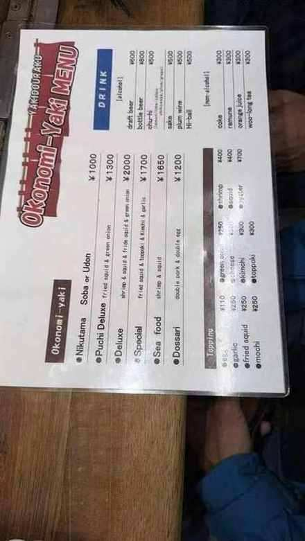
The A-Bomb Dome, Hiroshima.Okonomimura — "okonomi village" — is a single building in Shintenchi given over entirely to okonomiyaki. Floors of tiny counters, each with a hotplate and a handful of stools, each run by a different cook. You sit where there is space, order, and watch the whole thing built in front of you.
Hiroshima-style okonomiyaki is not the Osaka pancake. Thin batter first, then a heap of cabbage and beansprouts, pork, a press of noodles, and an egg cracked on top before the flip. The layers stay separate and the cabbage is still crunchy. Sauce on the table, seaweed and bonito if you want them.
 Okonomiyaki, Hiroshima — the first proper meal of the trip.
Okonomiyaki, Hiroshima — the first proper meal of the trip.


Two practical notes. One is a full meal, not a snack, so do not order a second unless you have skipped breakfast. And the building gets busy after 19:00 — at lunch it is calmer, the counters turn over quickly, and you eat within ten minutes of walking in.
The verdict: the noodles are what make it. A pancake with cabbage is a vegetable dish; add the press of yakisoba and it becomes the thing you want after a long flight.
Onomichi
Dinner was here for a simple reason: Onomichi is where we stayed, and where Day 1 starts. You drive in from Hiroshima, sleep in town, collect the bikes in the morning and ride out. That makes the evening the last proper meal before six days of riding, and the town's default meal worth taking seriously.
Onomichi Ramen Betcha — 4-11 Higashigoshocho, Onomichi. The first dinner of the trip, and the bowl I would send anyone to: pork and oyster ramen. The base is the standard Onomichi soy broth with its film of pork fat; the oysters go in on top and give it a briny, mineral depth the plain bowl does not have. Order the oyster version rather than the standard one — it is the reason to come.
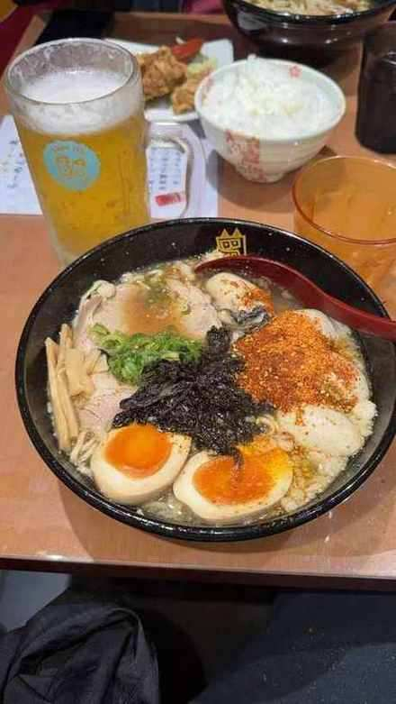
Pork and oyster ramen, Onomichi.- Onomichi ramen — soy-based broth with a film of melted pork fat and, in the local style, a raw egg. Shukaen and Hassho are the two names that come up; both are near the station and both are cheap.
- Lemon sour — Hiroshima Prefecture grows most of Japan's lemons, and the local highball is made with them. Cold, sharp, exactly right after a warm day.
- Setouchi seafood — the inland sea is at the door. Look for a counter with a fish tank and a short menu.
Setoda
A small island town with a lemon fixation, which sounds like a marketing line until you eat there.
Yubune Sento — 269 Setodacho Setoda. The public bath, two or three doors from Keima, which is the whole shape of a Setoda evening: dip in the hot pool, walk past two shopfronts, sit down to sashimi. Do it in that order — a hot soak is the only thing that reliably loosens a day in the saddle, and you do not want to eat first and soak second.
Keima — 251 Setodacho Setoda. Dinner at the end of Day 1, after the ride in from Onomichi: a sashimi set, and a generous one. Eating fish here rather than waiting for Kochi is the right call — the island sits in the middle of the inland sea, and it shows on the plate.
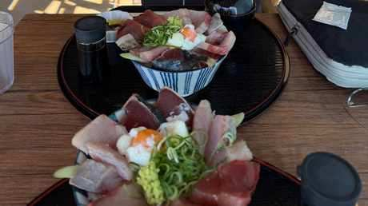
The sashimi set at Keima, Setoda — Day 1 dinner. Sunset at Setoda.
Sunset at Setoda.
Setoda's evening options are thin, which is the argument for deciding at check-in rather than at 19:00 with tired legs.
- Lemon ramen or lemon curry — the local lunch, and better than it has any right to be. Cafe Umi no Mieru is the obvious stop.
- Lemon gelato — creamy, properly tart, and the correct mid-ride purchase. Stalls along the route sell it; buy the one with the shortest queue and the fullest freezer.
- Fresh lemonade — squeezed to order at roadside stands on the island.
Yoshiumi
Roadside Station Yoshiumi Iki-iki-kan — 4520-2 Yoshiumichomyo, Imabari. Lunch on Day 2, and the best meal of the Shimanami: seafood grilled over charcoal at the roadside station, which sounds like a service-area compromise and is not. Order the fish and whatever shellfish is in the tank. Ours came with a hibachi stove set into the table, lobster and miso alongside it — the stove is lit at your seat and you cook the rest yourself, which is a better lunch than the price suggests. The lobster is served two ways and this is the part to copy: the tail comes as sashimi, and when the tail is finished you send the head back to the kitchen and it returns as miso soup. Ask for it that way rather than picking one. The bike rental counter here is the other useful detail — you can start or end a Shimanami ride at this door, which nobody tells you.
 Charcoal-grilled seafood at Yoshiumi Iki-iki-kan, Day 2 lunch.
Charcoal-grilled seafood at Yoshiumi Iki-iki-kan, Day 2 lunch.
 Hibachi stove with lobster and miso, lit at the table — Yoshiumi.
Hibachi stove with lobster and miso, lit at the table — Yoshiumi.
 Lobster tail as sashimi — the head goes back for miso soup.
Lobster tail as sashimi — the head goes back for miso soup.
Imabari
Shimanami Hot Spring Kisuke no Yu — 1-2-30 Nakahiyoshicho, Imabari. Right beside Imabari Station — you can see the station from the door, which makes it the obvious stop on the way to the train as well as after the ride. Dinner on Day 2, and the onsen does the cooking: you eat here after the ride and soak in the same building, which is the right end to the best day of the route. Ask about the meal when you arrive — it saves deciding anything at 19:00 with tired legs.
Yakitori town, unexpectedly.
- Imabari yakitori — thigh meat, heavily marinated, grilled over charcoal until the edges catch. Toriko is the name locals give.
- Seto Inland Sea seafood bowl — tai, octopus, amaebi, all raw and all sweet. Uoshin does a good one.
- Imabari burger — a local chain with a cult following among cyclists. Not fine dining. Entirely correct after 50 km.
Matsuyama
The best eating town on the route, and a rest day that should be spent at a table.
- Tai meshi — sea bream and rice cooked together in a stone pot, mixed at the table. We ate it at Tai Meshi Motoyama on Okaido. Ask for a raw egg with it: cracked over the rice and stirred through, it is the version locals eat. Ask for a raw egg with it: cracked over the rice and stirred through, it is the version locals eat and it turns the dish from a rice pot into a meal. Hibiki in Dogo and Mikawaya near the castle are the two to know.
- Botchan dango — three dumplings on a stick: bean paste, egg, green tea. Named after the novel, sold everywhere, worth one.
- Jakoten — deep-fried fish cake, dense and savoury. Beer food.
- Sushi counters — this is a city that takes sushi seriously; book rather than walk in.
Takamatsu
Sanuki udon country. Do not overthink it.
- Sanuki udon — thick, chewy, and served in a broth so plain it looks like a mistake. Nagata Udon opens at 06:00 and closes at 12:30, which tells you what it thinks of late risers.
- Shippoku udon — hot-pot style with seafood and vegetables, the heartier version for dinner.
- Wasambon — a fine-grained local sugar sweet, traditionally taken with green tea.
Tokushima
- Tokushima ramen — pork bone broth, raw egg, and offal, darker and sweeter than the ramen further north. Mendokoro Kashiwagi is the reference.
- Sudachi — the prefecture grows almost all of Japan's sudachi citrus. Look for it in sours, on fish, and in anything labelled すだち.
- Awa odori dango — colourful rice dumplings, more a souvenir than a meal.
Minami and the Pacific coast
The food thins out with the population, and what replaces it is better.
- Katsuo no tataki — bonito seared fast over a straw fire, sliced thick, with garlic, ginger and ponzu. This is the dish of the southern coast; every town claims the best version.
- Saba sushi — pressed mackerel with vinegared rice, wrapped in leaves. Built to travel, which is why it turns up in every station shop.
- Ise-ebi — spiny lobster. Expensive, occasionally unforgettable, and best ordered when someone else is driving.
Muroto
- Muroto katsuo tataki — the same dish again, and genuinely the best of the trip. Muroto Sennen Ichi is the famous counter.
- Sawachi ryori — a huge seafood platter on a wooden tray, meant for a group. Order one between four.
Kochi
The finish line, and the best single meal of the trip.
- Hirome Ichiba — a market hall of food stalls under one roof, communal tables in the middle, beer bought from the shop next door and drunk at the table. You buy from whichever counter looks good, carry it back, and eat with everyone else. Go on the last night, not the first.
- Katsuo no tataki — again, and better than anywhere inland.
- Tosa Kuroshio beer — the yuzu ale is the one to try.
- Yuzu honey lemonade — sweet, sharp, and non-alcoholic, which matters on a riding day.
Shimanto and Tosashimizu
The far southwest, where the trip earns its quiet.
- Shimanto River ayu — sweetfish grilled whole with salt. Sweet flesh, faint watermelon aroma, eaten with the fingers.
- Shimanto wagyu — a small, low-profile wagyu brand. If it is on a menu, order it.
- Chinkabashi sake — brewed with river water, named after the bridges without railings that cross the Shimanto.
- Tosashimizu katsuo — landed at the port that morning. The freshest version of the dish on the whole coast.
Photos from the route


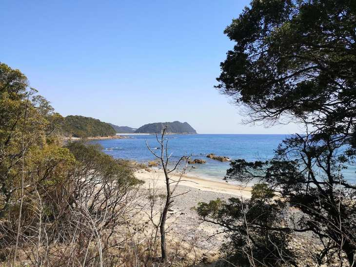


Bailouts
| Day | Escape |
|---|---|
| 3 | The Kotoku Line parallels Route 11 the whole way — any station works |
| 4 | The Mugi Line follows the coast as far as Kaifu; beyond that, nothing |
| 5–6 | No railway on the Muroto peninsula at all — taxi only |
Rides 5 and 6 carry real consequence if something breaks: full repair kit, charged phone, and a plan that doesn't depend on a train appearing.
What worked
- Ten minutes off the bike every 45–50 minutes, plus 45–60 for lunch. Frequency matters more than length.
- Regroup at every turn and every bridge ramp, not at the top of a climb after the damage is done.
- Two bottles, refilled constantly. Days 6–8 have long gaps between shops.
- Lights in every tunnel, single file, no overtaking the lead rider.
- E-bikes are not a defeat. If a rider is struggling, an e-bike keeps the group together and costs nothing in enjoyment. The group finishing together is the whole point.
What I'd change
Ride 3 is long. It's flat, the fish market justifies it, and the coastal line is far better than the inland climb it replaced — but 82.5 km sitting in front of the hardest day of the trip is a big ask. Next time I'd start earlier or shave a little off Ride 4.
And I'd carry one more layer than I think I need. The Pacific coast in November is warm in the sun and cold in the wind, often within the same hour.
JapanShikokuCyclingTravel